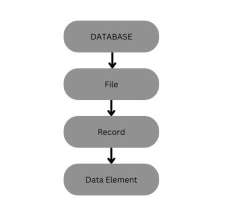
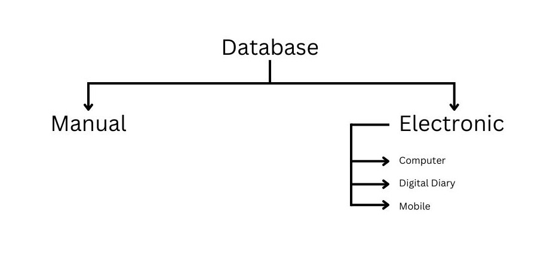
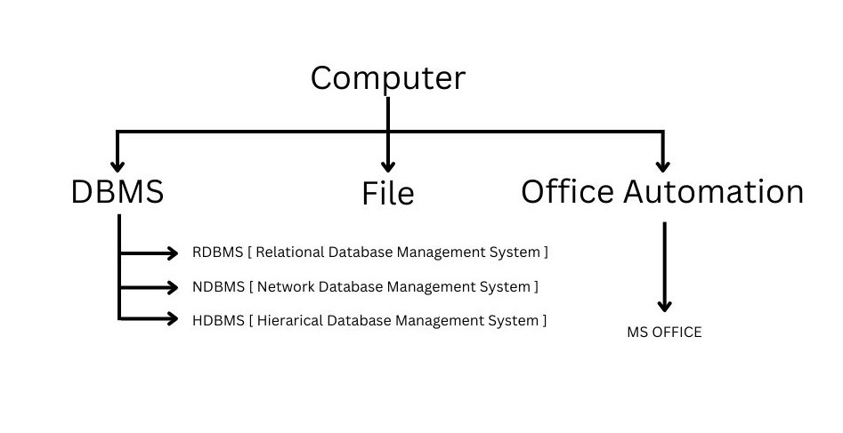
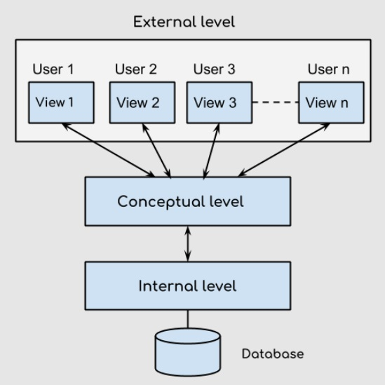

Database: Database is a collection of related information in a systematic manner.
Example: A row of a list of roll number and name of a particular class.
A database is a general term for any useful collection of logically data whereas DBMS is a computer for a software specially design to maintain database.
  A DBMS is a way to centralized the storage and manage the data. The purpose of database is to provide the correct data to the correct user. The same set of data may be previewed differently by different user.
This is the lowest level of abstraction and describe how the data are actually stored. The physical level complex of low level structure in detail.
The overall set of relationship for the entire database is known as database schema. it includes tables, their constraints and relationship.
The collection of information stored in the database at the particular movement is called instance of the database.
There are many types of database languages:
DDL is used to define the conceptual schema of the database. It is a set of SQL command used to create modified and delete database structure.
They are generally used by the DBA ( Database administration ) .
The full SQL command scheme available in DDL.
DML is a language that enable user to access manipulate data stored in the database. The DML provides command to select, retrieve, delete, modify the data.
The few SQL command available in DML:
Through DCL we can control and access to data to the database. Sometimes DCL statement are grouped with DML statement.
Through DCL we can:
The DDL statements are said the DDL compiler. Which converts these statements to set of table these table contains the meta data concerning the database and arg in the form that can be used by other components of the DBMS
The DML pre-compiler converts the DML statement embedded in an application program to normal procedure cost in the whole language.
If the DML statement include the query than it goes to query processor which in traps the query and converts it into an efficient series of operation.
Data Manager control the database it provides the interface between the database and the application program data manager convert the user request coming directly via the query processor or via application program to three physical file system.
The data manager is responsible for the instruction with the file manager or interpret and security enforcement and concurrency control.
File manager is responsible for allocation of space on the disk storage and the data structure used to represent information storage on physical media.
These are actual physical file which contain the data.
Is used to store the meta data about the structure of the database. It also keep track of relationship that exists between various data structure.
A DBMS is used store information regarding an organization institute, etc. In order to represent this information in some kind of mapping or modeling is required so that the things which can be happening in real world can be simulated and stored in a computer database and some popular data models are:
The data is stored Hierarchically using a down tree. This model uses pointer to navigate between stored data. It was the first DBMS Model.
Like the hierarchical model, this model was pointer towards stored data. However it doesn't necessary use a downward tree structure.
Data is stored in 2D form in rows and columns The data is manipulated based on the relational theory of mathematics. The data is organized in form of independent tables. A table consist of number of rows ( records of tuples ) and columns ( attributes )
According to Edgar F. Codd a key has only one meaning, in relational theory. It is a set of one or more column whose combined values are unique from all concurrence. In a given table, a key is the relational means of specifying uniqueness.
A key is a collection of attribute that maybe used to identify retrieve one or more records.
A candidate key is set of one row and columns. Whose combined values and unique among all occurrence. A candidate key is a key that can be used to uniquely identify a record. It may be used to retrieve one specific record so it becomes a primary key.
In simple words, a candidate key is an attribute which can be selected as primary key.
Note: All the keys are made from candidate key.
| ID | Name | Class | Branch |
|---|---|---|---|
| 1 | X | BCA | CS |
| 2 | Y | BCA | CS |
| 3 | Z | BCA | CS |
| 4 | A | BCA | CS |
A super key is a column or a set of columns. That uniquely identify a row within a table. The word 'super' denotes this superiority of a key, thus a super key is a super set of a key known as candidate key, it means a candidate key is obtained from super key only.
A primary key in a table that uniquely identifies each row and column or set of columns in the table. The primary key is an attribute or a set of attributes that help to uniquely identify the tuples(records) in the relational table. The primary key provides the means to distinguish one tuple from all the others in the relation.
| E.Id | E.Name | E.Section | E.Class |
|---|---|---|---|
| 1 | X | NULL | BCA |
| 2 | Y | A-1 | BCA |
| 3 | Z | B-3 | BCA |
An alternate is candidate key which is not selected to the primary key
Foreign Key is a column that refers to the primary key/unique key of another table. So it demonstrates the relationship between tables and acts as the cross reference among them. It establish relationships between tables and also ensure consistency and integrity of data. A foreign key is applied to a column of one table which references the primary key of a column in another table.
A compound key ( also called composite key ) or ( concatenate key ) is a key that consist of two or more attributes